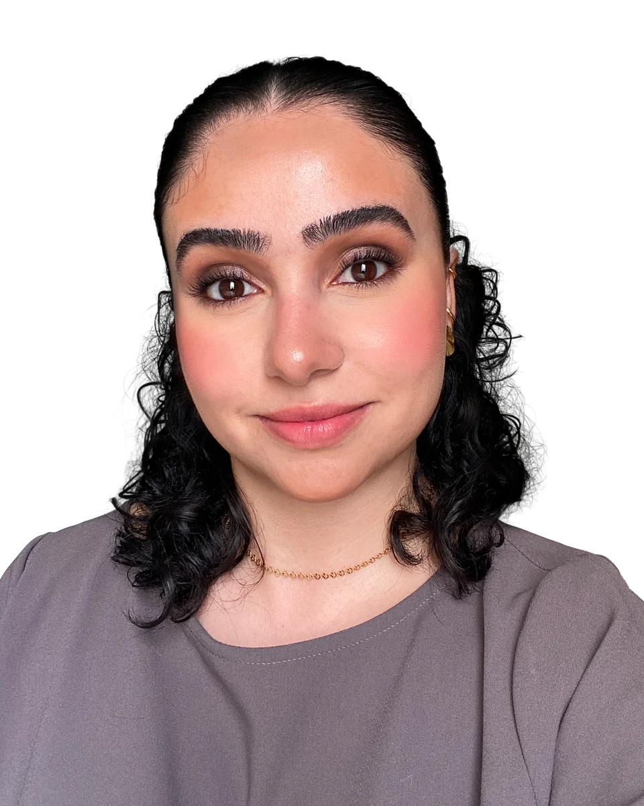

imagem do projeto · 4:3
Título do projeto
Resumo do projeto em uma ou duas frases: o desafio, o que foi feito e o resultado.
Crio soluções visuais que equilibram estética, clareza e estratégia.
Disponível para novos projetos
Para mim, o design nasce da observação e da curiosidade. Antes de qualquer traço, busco entender o contexto, as pessoas e o problema real a ser resolvido.
O que mais me move é criar: montar composições, testar combinações de cor e forma, escolher a tipografia certa, diagramar, escolher o grid, aplicar os princípios do design e ver um projeto ganhar vida. É criando que eu perco a noção do tempo.
A graduação em Design Gráfico no Senac, aliada à minha formação e experiência em UX/UI, produtos digitais e service design, me dá uma visão holística dos projetos. Sei navegar com facilidade entre análise de dados, estratégia e criação visual.
Enxergo o design como uma ferramenta estratégica de comunicação, transformação e resolução de problemas. Meu trabalho é guiado por método, clareza e intenção: onde a estética encanta e a função resolve.
Com bacharelado em Ciências Econômicas e estudos em Economia Comportamental, tenho um olhar treinado sobre o comportamento humano e os processos de tomada de decisão. Trago esse repertório para o design, criando peças mais persuasivas e produtos digitais mais intuitivos.
Amo viajar, de preferência para lugares com praia ou cachoeira — mas a saudade do Oliver e da Jade, meus gatos, faz com que as viagens sejam curtas.
Conhecer novos restaurantes, cafeterias e sorveterias é um dos meus passatempos favoritos.
Cinema, passeios ao ar livre, bons livros, séries e boa música.
Frequento a academia regularmente. Não por amor, mas por pura responsabilidade com a saúde.
Design para redes sociais, peças publicitárias, diagramação, e-books, infográficos, relatórios e apresentações.
Ver projetos 02Retoque e correção de fotografias, ajustes de cor, luz e contraste, recorte, manipulação de imagens e composição visual.
Ver galeria 03Logotipos, símbolos, paleta de cores, tipografia, sistemas visuais, aplicações, manual de marca, posicionamento e experiência do cliente.
Ver projetos 04Arquitetura de informação, prototipagem, design system, mapeamento de jornadas, pesquisa com usuários e service blueprints.
Ver projetosResumo do projeto em uma ou duas frases: o desafio, o que foi feito e o resultado.
Retoques, correções de cor e luz, recortes e composições, com o antes e o depois de cada imagem.
Resumo do projeto em uma ou duas frases: o desafio, o que foi feito e o resultado.
Resumo do projeto em uma ou duas frases: o desafio, o que foi feito e o resultado.